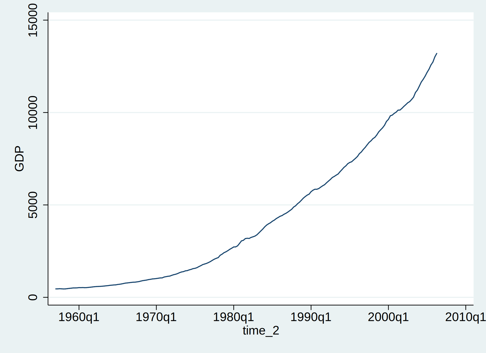

3 Preliminary Analysis
Load Stata data file
time series plot

variable transformation

summary statistics
gdp GDP
--------------------------------------------------------------------------------------------------------------
type: numeric (float)
range: [454,13197.3] units: .1
unique values: 198 missing .: 2/200
mean: 4270.62
std. dev: 3672.77
percentiles: 10% 25% 50% 75% 90%
--------------------------------------------------------------------------------------------------------------
yyy log(GDP)
--------------------------------------------------------------------------------------------------------------
type: numeric (float)
range: [6.1180973,9.4877672] units: 1.000e-07
unique values: 198 missing .: 2/200
mean: 7.88039
std. dev: 1.06695
percentiles: 10% 25% 50% 75% 90%